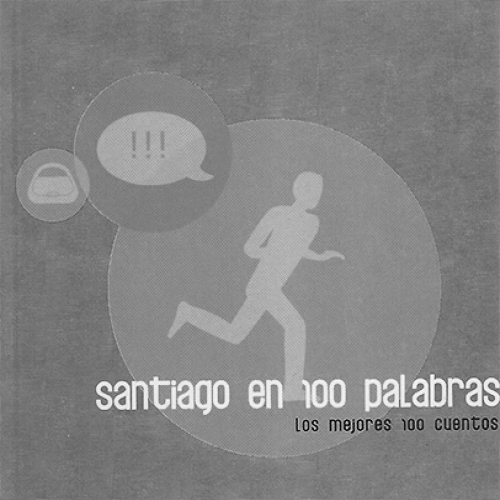
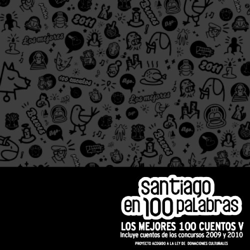
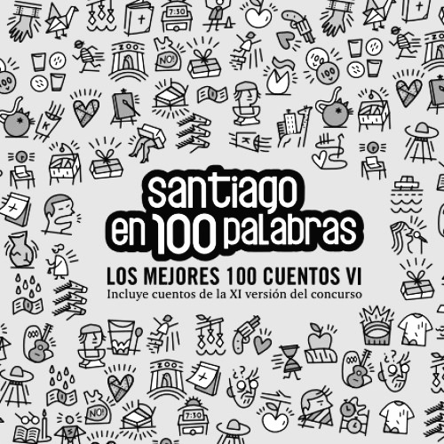
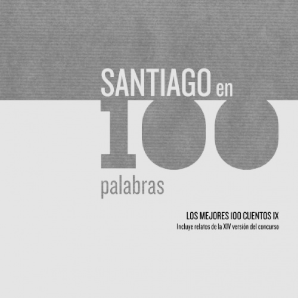
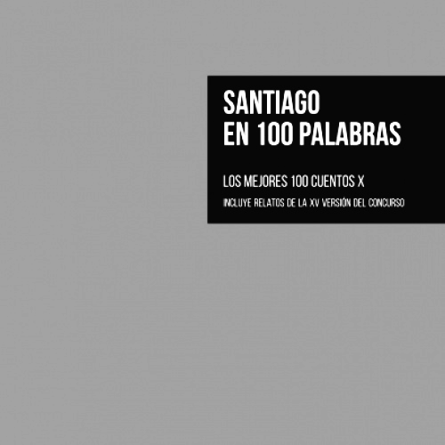
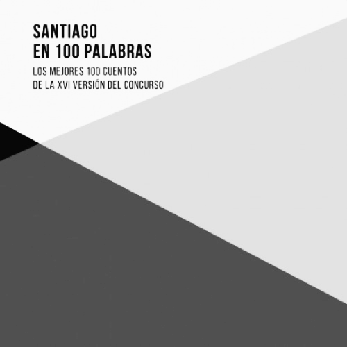
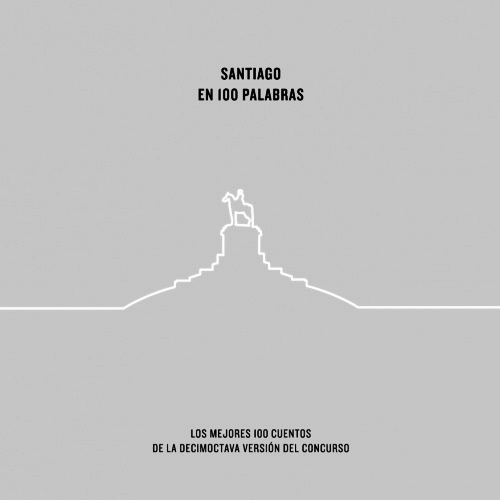
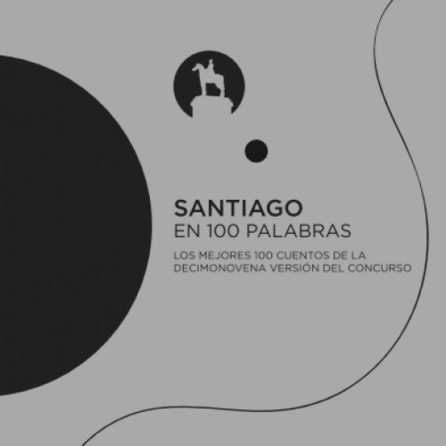
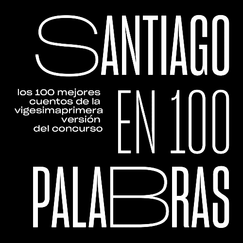
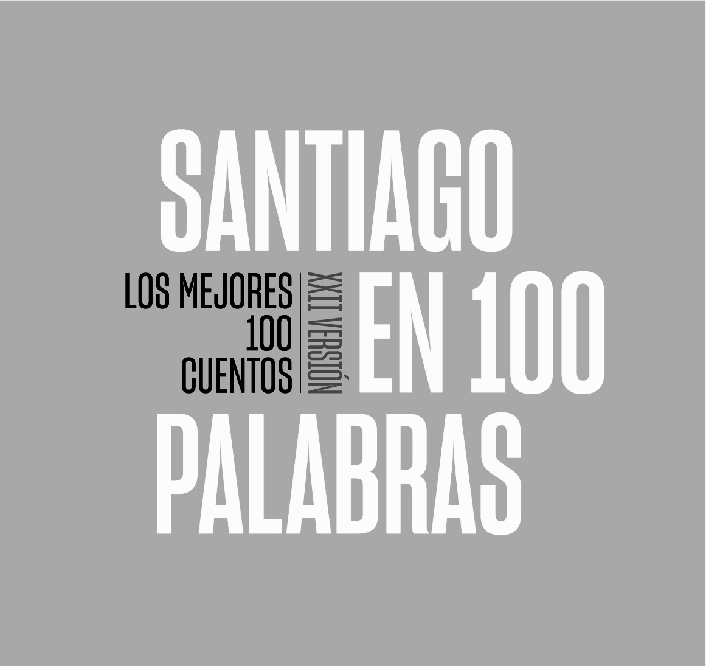

SANTIAGO EN 100 PALABRAS
La Fundación Plagio ha realizado este concurso de manera casi ininterrumpida desde 2001.
25 años | 21 ediciones.
Dos conmemorativas y 19 anuales | 1.900 cuentos premiados.
Los 100 mejores de cada año | entre miles de enviados.
En Chile hay 346 comunas. Si bien todas ellas pueden participar del concurso, el 89% son de la Región Metropolitana.
Demás está decir que concursar no asegura un puesto en el salón de honor. Son cientos de miles los cuentos que año a año llegan. Es difícil identificar una tendencia respecto a cuantos llegan, no así respecto a cuantos quedan.


















La geografía del privilegio literario
A primera vista, se podría argumentar que la acumulación de premios responde a la densidad demográfica de cada sector...
Si miramos la densidad de las barras, el fenómeno no pasa por una cuestión de populosidad...

Santiago Centro: La excepción del capital cultural
Dentro del mar de datos, la comuna de Santiago aparece como un punto discordante. Registra un porcentaje de pobreza multidimensional del 16,5%, situándose lejos de los rangos blindados de Vitacura (2,5%) o Providencia (4,4%), y sin embargo, lidera históricamente en cantidad de autores seleccionados.
¿A qué se debe esto? Históricamente, la comuna concentra la red de liceos emblemáticos de la educación pública chilena. Centros que por décadas funcionaron como núcleos de alta densidad cultural, demostrando que el capital educativo es un factor indisoluble a la hora de ponerle palabras a la experiencia urbana.
La primera vez
"...Mientras caminaba fue repasando cómo lo haría, incluso agarró una que otra piedra, para estar más preparado. Y llegó el momento: pañuelo a la cara y mano al bolsillo, lanzó su primera piedra."
— Mirko Pavlovic, 31 años, Santiago.
La voz solitaria de la periferia profunda
En el reverso exacto de la moneda se encuentran las comunas rurales y periféricas de la región. Localidades como María Pinto (27,2% de pobreza) o San Pedro (32% de pobreza) se sitúan en el piso absoluto de la muestra estadística, con burbujas que apenas logran despegar del eje cero.
Talagante es el retrato vivo de este aislamiento. En casi un cuarto de siglo de concurso, entre miles y miles de textos enviados de toda la provincia, la tómbola de la historia arrojó un solo papel ganador para ellos. Una posibilidad entre 1.900.
Charchazo
"...Llamó tanto mi atención que llegué a casa muy emocionada a preguntarle a mi abuela si sabía algo de esa época. A ella se le desfiguró completamente la cara y me pegó en la boca."
— Trinidad Vergara Salinas, 16 años, Talagante.
Metodología y Transparencia
Este reportaje multimedia de datos se construyó cruzando dos matrices documentales independientes:
- El histórico consolidado de cuentos ganadores y menciones honrosas de las ediciones oficiales del concurso Santiago en 100 Palabras (recopilado a través de la Fundación Plagio).
- Las bases comunales de la Encuesta de Caracterización Socioeconómica Nacional (CASEN 2022), procesadas mediante el Ministerio de Desarrollo Social y la Biblioteca del Congreso Nacional.
Las visualizaciones interactivas de datos y las correlaciones estadísticas presentadas en esta entrega preliminar fueron modeladas utilizando el lenguaje de programación Python junto a las librerías Pandas y Altair, asegurando un flujo de trabajo replicable y de código abierto.